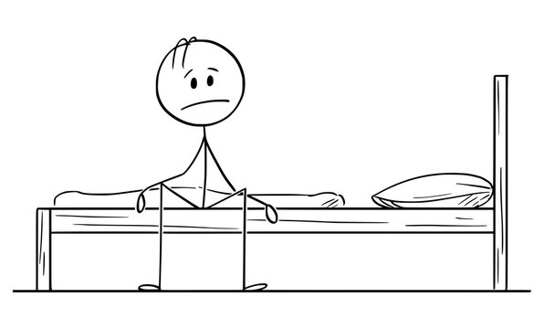
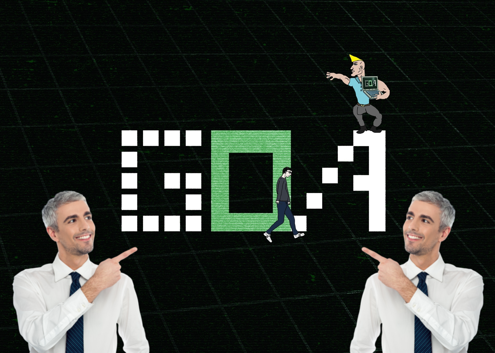
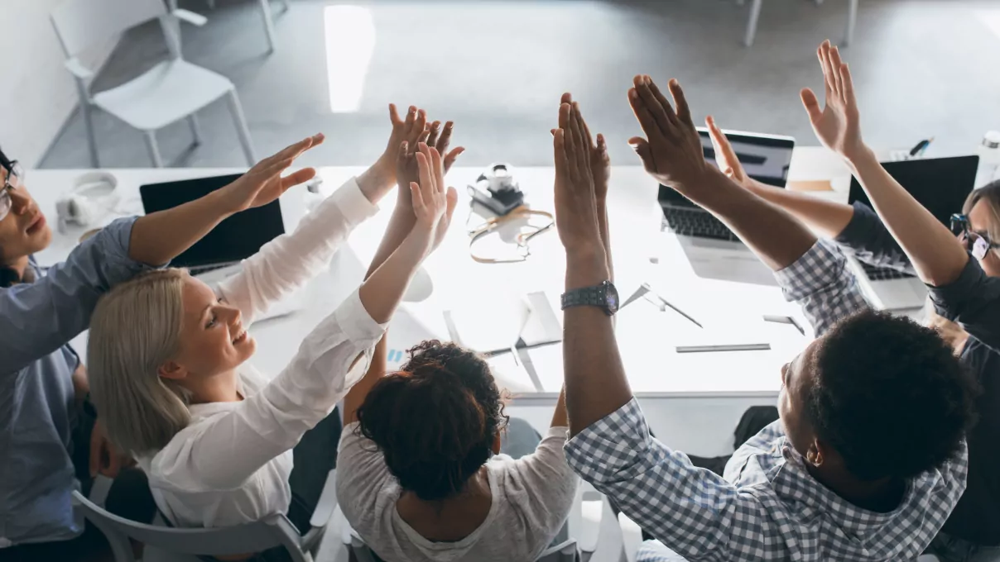

პროგრამირება ყოველთვის მიზიდავდა, ბავშობიდანვე მაინტერესებდა როგორ იწერებოდა თამაშები რა იყო მაგისთვის საჭირო. სანამ გავიცნობდი "გოა" აკადემიას, პრიგრამირება ჩემით დავიწყე სწავლა მაგრამ არ მქონდა დიდი შედეგები :\
რადგან არვიცოდი სწორი მიდგომა და საიდან დამეწყო, რის შედეგაც არ მქონდა არანაირი მოტივაცია. დავიწყე ინფორმაციის ძიება სად და როგორ შეიძლებოდა სწორი მიმართულებით პროგრამირების შესწავლა. "გოა" აკადემიის გვერდი პირველივე ამომიგდო ძიებაში და იმ წამსვე დავინტერესტდი, მომეწონა მათი სწავლის პროგრამა, ვიფიქრე რატომაც არ მეცადა და აღვმოვჩნდი მართალი!
პირველი სწავლის დღეს ჯგუფში სადაც მოვხდი დაგვხდა ძალიან მეგობრული მენტორი, რომელიც იმ დღიდანვე გვეხმარება ყველაფერში დაზარების გარეშე. კარგი ახსნა, ხალისიანი დავალებები, მონდომებით ვასრულებდი ყველაფერს რის შედეგაც დამაყენეს მინი ლიდერად!
რაც ძალიან დიდი მოტივაცია მომცა ბოლომდე მივყვე "გოა" აკადემიაში სწავლას და მომავალში ამ საქმიანობას. მეკითხებით რატომ "გოა" აკადემია? აქ მიხვდებით რომ პროგრამირება არის არამარტო კოდის დაწერა, არამეტ სულ სხვა სამყარო, გუნდურად მომუშავე მექანიზმი, ახალი და საინტერესო მეგობრები, მოხალისე პერსონალი!
მოდით "გოა"-ს აკადემიაში და თვით იხილავთ ყველაფერს!